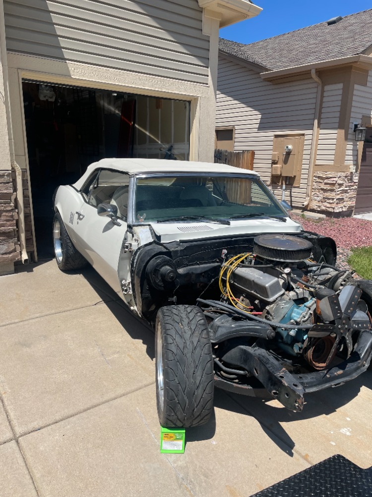

Starting when I was about 12 I had the idea to buy used computers from places that were otherwise trashing or shredding their devices, then install the newest windows on the device and reapir any
When I was 16, a long time neighboor's brother passed away leaving behind a one owner 1979 Pontiac Firebird Trans Am that he had purchased from the showroom floor. They borrowed our farm truck, which I was driving at the time, to go get the car and bring it here to sell it. I asked to test drive the car when I was over picking up the truck, and fell in love with it. Completely suckered at that point I ended up buying the car from them and have been working on it since.

I further got into this passion last summer when I saw a Facebook marketplace listing for a 1968 Pontiac Firebird convertible that was mostly dissasmbled but had all of the parts. I ended up going on a 2 day round trip to California and back to pick up the car and trailer it home. It is currently a long term project that I am working on restoring to a good driver condition.
